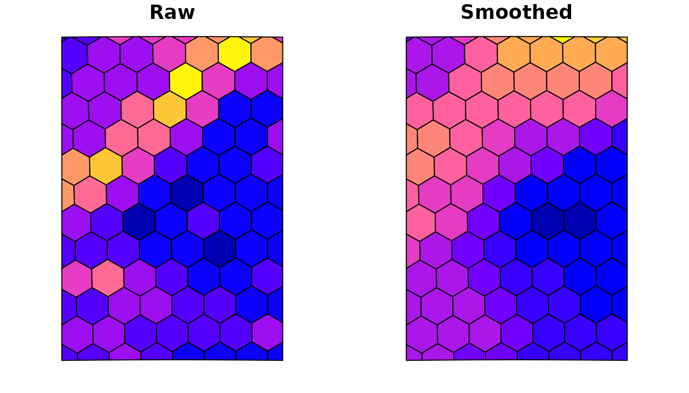

Getting started with hexsmoothR
Max M. Lang
2026-04-17
Source:vignettes/hexsmoothR-complete-guide.Rmd
hexsmoothR-complete-guide.RmdWhat hexsmoothR does
hexsmoothR builds a hexagonal (or square) grid over a
study area, extracts raster values into the cells, and applies a
Gaussian-weighted spatial-smoother that uses each cell’s
N-order neighbours. The smoother is implemented in C++ with a
pure-R fallback.
The package is intentionally small. There are four user-facing steps:
-
create_grid()- build the grid. -
extract_raster_data()- pull raster values into the cells. -
compute_topology()- find neighbours and weights. -
smooth_variables()- apply the smoother.
Helpers (get_utm_crs(),
find_hex_cell_size_for_target_cells(),
hex_flat_to_edge() and friends) cover common
conveniences.
Setup
We use the small NDVI raster shipped with the package so the vignette runs without external data:
ndvi_path <- system.file("extdata", "default.tif", package = "hexsmoothR")
ndvi <- rast(ndvi_path)
ndvi
#> class : SpatRaster
#> size : 251, 224, 1 (nrow, ncol, nlyr)
#> resolution : 0.008983153, 0.008983153 (x, y)
#> extent : -5.003616, -2.99139, 38.99587, 41.25064 (xmin, xmax, ymin, ymax)
#> coord. ref. : lon/lat WGS 84 (EPSG:4326)
#> source : default.tif
#> name : NDVIBuild a study area from the raster’s extent:
Cell-size units depend on the CRS
Cell-size units are dictated by the CRS that the grid is built in:
| Grid CRS |
cell_size units |
|---|---|
| Projected (UTM, etc.) | metres |
| Geographic (WGS84) | degrees |
For real analyses, work in a projected CRS so distances and areas are
meaningful. get_utm_crs() picks an appropriate UTM zone
automatically:
utm_crs <- get_utm_crs(study_area_wgs)
study_area_utm <- st_transform(study_area_wgs, utm_crs)
utm_crs
#> [1] "EPSG:32630"Step 1: create a grid
hex_grid <- create_grid(
study_area = study_area_utm,
cell_size = 25000, # 25 km flat-to-flat
type = "hexagonal"
)
nrow(hex_grid)
#> [1] 98
head(hex_grid[, c("grid_id", "grid_index")])
#> Simple feature collection with 6 features and 2 fields
#> Geometry type: POLYGON
#> Dimension: XY
#> Bounding box: xmin: -5.003616 ymin: 38.99587 xmax: -4.859316 ymax: 41.03265
#> Geodetic CRS: WGS 84
#> grid_id grid_index
#> 1 grid_1 1
#> 2 grid_2 2
#> 3 grid_3 3
#> 4 grid_4 4
#> 5 grid_5 5
#> 6 grid_6 6
#> sf..st_make_grid.study_area_proj..cellsize...grid_size..square....type....
#> 1 POLYGON ((-4.859316 38.9970...
#> 2 POLYGON ((-4.867469 39.3060...
#> 3 POLYGON ((-4.877938 39.6960...
#> 4 POLYGON ((-4.888613 40.0859...
#> 5 POLYGON ((-4.899497 40.4758...
#> 6 POLYGON ((-4.910597 40.8657...If you don’t know the right cell size up front, search for one that yields approximately a target number of cells:
target_size <- find_hex_cell_size_for_target_cells(
study_area = study_area_utm,
target_cells = 250,
cell_size_min = 5000,
cell_size_max = 100000
)
round(target_size, 0)
#> [1] 15391create_grid() will auto-pick a UTM CRS when
projection_crs = NULL (the default), so the simplest call
is just:
hex_grid_wgs_input <- create_grid(study_area_wgs, cell_size = 25000)Step 2: extract raster values into cells
extract_raster_data() accepts either file paths or
terra::SpatRaster objects. CRS transformations are applied
automatically per raster, so the grid and rasters do not need to share a
CRS.
extracted <- extract_raster_data(
raster_files = list(ndvi = ndvi),
hex_grid = hex_grid
)
str(extracted, max.level = 1)
#> List of 6
#> $ data :'data.frame': 98 obs. of 4 variables:
#> $ hex_grid :Classes 'sf' and 'data.frame': 98 obs. of 4 variables:
#> ..- attr(*, "sf_column")= chr "sf..st_make_grid.study_area_proj..cellsize...grid_size..square....type...."
#> ..- attr(*, "agr")= Factor w/ 3 levels "constant","aggregate",..: NA NA NA
#> .. ..- attr(*, "names")= chr [1:3] "grid_id" "grid_index" "cell_id"
#> $ cell_size: NULL
#> $ extent :S4 class 'SpatExtent' [package "terra"]
#> $ variables: chr "ndvi"
#> $ n_cells : int 98
head(extracted$data)
#> cell_id x y ndvi
#> 1 1 -4.941120 39.03844 0.1554499
#> 2 2 -4.943375 39.36834 0.1508328
#> 3 3 -4.947612 39.75840 0.1582167
#> 4 4 -4.952039 40.14843 0.2210585
#> 5 5 -4.956664 40.53843 0.1682958
#> 6 6 -4.961496 40.92839 0.1416744The returned list contains the value table (data), the
grid actually used (hex_grid), and a bit of provenance
(cell_size, extent, variables,
n_cells).
Step 3: compute topology
compute_topology() finds the N-order neighbours
of every cell and derives Gaussian weights from the average inter-cell
distance:
topology <- compute_topology(hex_grid, neighbor_orders = 2)
str(topology, max.level = 1)
#> List of 7
#> $ neighbors :List of 2
#> $ avg_distance : num 23303
#> $ sigma : num 11651
#> $ weights :List of 3
#> $ grid_ids : chr [1:98] "grid_1" "grid_2" "grid_3" "grid_4" ...
#> $ grid_indices : int [1:98] 1 2 3 4 5 6 7 8 9 10 ...
#> $ neighbor_orders: int 2The relevant numbers:
topology$avg_distance # metres between neighbouring centroids
#> [1] 23302.58
topology$sigma # bandwidth used for Gaussian decay
#> [1] 11651.29
topology$weights # normalised centre + per-order weights
#> $center_weight
#> [1] 0.3333333
#>
#> $neighbor_weights
#> [1] 0.3333333 0.3333333
#>
#> $sigma
#> [1] 11651.29By construction, all weights (centre + every order) sum to 1:
topology$weights$center_weight + sum(topology$weights$neighbor_weights)
#> [1] 1You can override the auto-weights by passing
neighbor_weights_param:
topo_custom <- compute_topology(
hex_grid,
neighbor_orders = 3,
neighbor_weights_param = list(0.5, 0.3, 0.1)
)
topo_custom$weights$neighbor_weights
#> [1] 0.26315789 0.15789474 0.05263158Step 4: smooth
result <- smooth_variables(
variable_values = list(ndvi = extracted$data$ndvi),
neighbors = topology$neighbors,
weights = topology$weights
)
str(result, max.level = 2)
#> List of 1
#> $ ndvi:List of 4
#> ..$ raw : num [1:98] 0.155 0.151 0.158 0.221 0.168 ...
#> ..$ weighted_combined: num [1:98] 0.162 0.166 0.174 0.188 0.193 ...
#> ..$ neighbors_1st : num [1:98] 0.161 0.17 0.169 0.21 0.197 ...
#> ..$ neighbors_2nd : num [1:98] 0.163 0.166 0.179 0.173 0.195 ...For each variable you get:
| Field | Meaning |
|---|---|
raw |
The original (unsmoothed) cell value |
neighbors_<N>{st,nd,…} |
Mean of valid neighbours at order N |
weighted_combined |
Gaussian-weighted average of the centre and all neighbours |
Quick noise-reduction check:
Plotting
Attach the smoothed columns back onto the grid and plot:
hex_grid$ndvi_raw <- result$ndvi$raw
hex_grid$ndvi_smoothed <- result$ndvi$weighted_combined
op <- par(mfrow = c(1, 2), mar = c(2, 2, 2, 1))
plot(hex_grid["ndvi_raw"], main = "Raw", key.pos = NULL, reset = FALSE)
plot(hex_grid["ndvi_smoothed"], main = "Smoothed", key.pos = NULL, reset = FALSE)
par(op)N-order smoothing
Increasing neighbor_orders widens the kernel. The cost
is roughly linear in the number of orders for these small grids, but
neighbour counts grow quadratically with order, so don’t go
overboard:
results_per_order <- lapply(2:4, function(k) {
topo_k <- compute_topology(hex_grid, neighbor_orders = k)
smooth_variables(
variable_values = list(ndvi = extracted$data$ndvi),
neighbors = topo_k$neighbors,
weights = topo_k$weights
)$ndvi$weighted_combined
})
sapply(results_per_order, sd, na.rm = TRUE) # SD shrinks with order
#> [1] 0.02374635 0.01936584 0.01598182Multiple variables in one pass
smooth_variables() processes any number of variables in
a single C++ call, which is much faster than per-variable looping:
multi <- smooth_variables(
variable_values = list(
ndvi = extracted$data$ndvi,
ndvi_squared = extracted$data$ndvi^2
),
neighbors = topology$neighbors,
weights = topology$weights
)
names(multi)
#> [1] "ndvi" "ndvi_squared"Tips and gotchas
-
Always project before measuring. If you pass a
geographic-CRS grid,
cell_sizeis in degrees, distances aren’t comparable across latitudes, and the topology distance estimate is meaningless. Use UTM or another projected CRS, or rely on the auto-detection. -
rawis the input, not a smoothing output. It’s there so you can carry the original value alongside the smoothed columns without an extra join. -
NA propagation.
weighted_combineddivides by the realised weight (sum of weights of non-NA contributors), so missing neighbours don’t bias the result towards zero - they’re simply skipped. -
Verbose mode. Set
options(hexsmoothR.verbose = FALSE)in scripts and notebooks to silence the progress messages emitted bycreate_grid(),compute_topology(), etc.